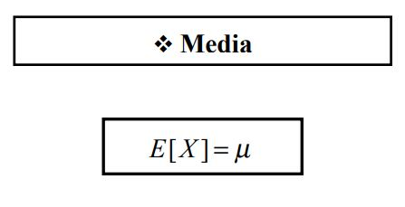
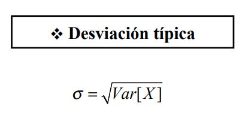
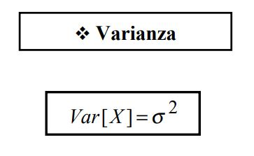

Esperanza y varianza
Los nombres de esperanza matemática y valor esperado tienen su origen en los juegos de azar y hacen referencia a la ganancia promedio esperada por un jugador cuando hace un gran número de apuestas.
Si la esperanza matemática es cero, E(x) = 0, el juego es equitativo, es decir, no existe ventaja ni para el jugador ni para la banca.

Ejemplos
Si una persona compra una papeleta en una rifa, en la que puede ganar de 5.000 € ó un segundo premio de 2000 € con probabilidades de: 0.001 y 0.003. ¿Cuál sería el precio justo a pagar por la papeleta?
E(x) = 5000 · 0.001 + 2000 · 0.003 = 11 €
Un jugador lanza dos monedas. Gana 1 ó 2 € si aparecen una o dos caras. Por otra parte pierde 5 € si no aparece cara. Determinar la esperanza matemática del juego y si éste es favorable.
E = {(c,c);(c,x);(x,c);(x,x)}
p(+1) = 2/4
p(+2) = 1/4
p(−5) = 1/4
E(x)= 1 · 2/4 + 2 · 1/4 - 5 · 1/4 = −1/4.
Por lo tanto se puede decir que es desfavorable.
Desviación estándar
La desviación estándar (σ) mide cuánto se separan los datos.
La fórmula es fácil: es la raíz cuadrada de la varianza. Así que, "¿qué es la varianza?"

Varianza
La varianza (que es el cuadrado de la desviación estándar: σ2) se define así: es la media de las diferencias con la media elevadas al cuadrado.
En otras palabras, sigue estos pasos:
- Calcula la media (el promedio de los números)
- Ahora, por cada número resta la media y eleva el resultado al cuadrado (la diferencia elevada al cuadrado).
- Ahora calcula la media de esas diferencias al cuadrado.

Propiedades de la varianza:
Si X es una variable aleatoria con función de probabilidad o densidad f(x), la varianza de una función de la variable X , m(x) , se calcula según la expresión:

Casos concretos:
Cuando a todos los valores de una variable se les suma una constante, la varianza de la variable conserva el mismo valor (ver imagen en las propiedades de la media).
Cuando a todos los valores de una variable se les multiplica por una constante, la varianza de la variable queda multiplicada por el valor de la constante elevado al cuadrado (ver imagen en las propiedades de la media).
Si X e Y son dos variables aleatorias con función de densidad o probabilidad conjunta f(x,y), la varianza de la función m(x,y) = a X ± b Y, donde a y b son constantes reales se calcula como:

En el caso de que a = b = 1
Si además ocurre que X e Y sean independientes σxy = 0 , luego